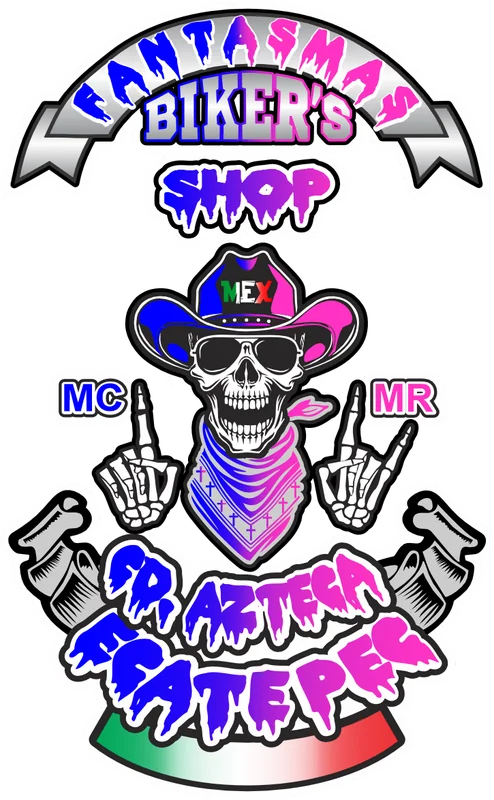

📝
1. Registro
El propietario proporciona la información, imágenes, redes y promociones del negocio.
Aliados Fantasma conecta comercios de la zona mediante páginas propias, códigos QR, promociones y difusión recíproca.
Una iniciativa impulsada por Fantasmas Biker's Shop para apoyar negocios locales.
El negocio se registra, nosotros revisamos la información y, al aprobarse, recibe una página pública y su material con código QR.
El propietario proporciona la información, imágenes, redes y promociones del negocio.
Aliados Fantasma revisa la solicitud y puede aprobarla o pedir correcciones.
El perfil se publica y se prepara el póster con su código QR.
Fantasmas Biker's Shop aparece como negocio fundador y Carnitas El Compadre funciona como demostración ficticia.

Demostración de cómo puede verse el perfil de un negocio de alimentos.
Ver demostraciónInformación, horarios, promociones, redes y ubicación.
Una dirección directa para compartir y colocar en el local.
Participación en una red de promoción entre comercios.
Mientras terminamos el módulo de cuentas y aprobación, ya puedes conocer el proyecto y solicitar información.